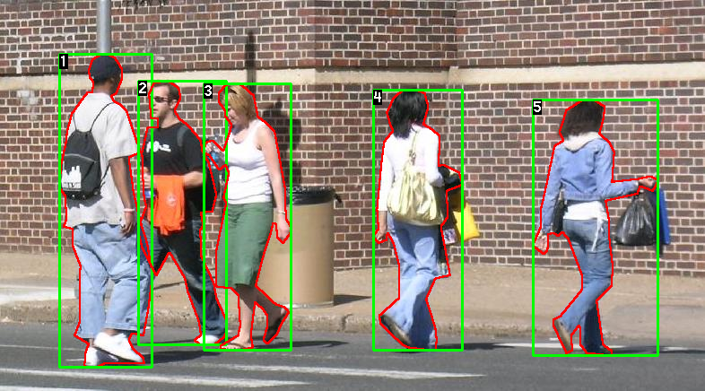
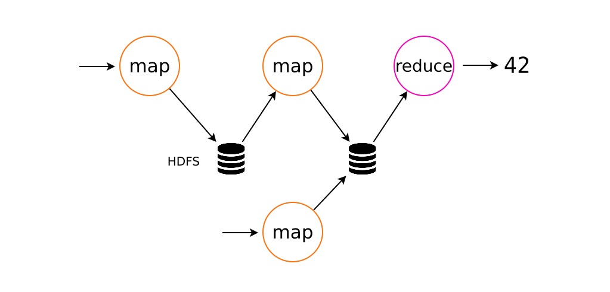
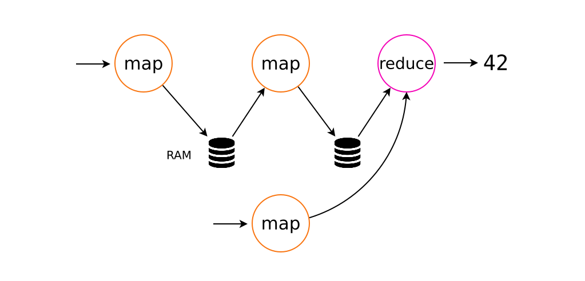
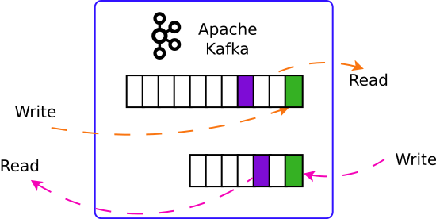

Megadata vs Giant Algorithms
Bas-Fonds et Tuyauterie du Machine Learning
Régis Behmo
@regisb
42AI, 14 novembre 2017
0. machine learning? wat?
1. Comment faire du machine learning
2. Comment faire du machine learning
3. Superman
0. machine learning? wat?
1. Comment faire du machine learning
2. Comment faire du machine learning
3. Superman
À partir de sources d'informations partielles, générer de manière automatique de nouvelles informations qui soient les plus correctes possibles.
Quelles sont les positions des piétons dans cette image ?
Quelle température fera-t-il demain ?
Quel coup dois-je jouer pour gagner ?
Quel coup dois-je jouer pour gagner ?
Quel coup dois-je jouer pour gagner ?
Quel est le modèle 3D de cet objet ?
Source: "Total Moving Face Reconstruction", ECCV 2014Qui a commis ce crime ?
À partir de sources d'informations partielles, générer de manière automatique de nouvelles informations qui soient les plus correctes possibles.
Apprentissage supervisé
Apprentissage semi supervisé
Apprentissage non supervisé
À partir de sources d'informations partielles, générer de manière automatique de nouvelles informations qui soient les plus correctes possibles.
Quelles sont les positions des piétons dans cette image ?
| Apprentissage supervisé | |
|---|---|
| Données d'apprentissage | Données de test |
|  |  |
À partir de sources d'informations partielles, générer de manière automatique de nouvelles informations qui soient les plus correctes possibles.
Quelles sont les positions des piétons dans cette image ?
| Apprentissage semi supervisé | |
|---|---|
| Données d'apprentissage | Données de test |
 | |
À partir de sources d'informations partielles, générer de manière automatique de nouvelles informations qui soient les plus correctes possibles.
Quelles sont les positions des piétons dans cette image ?
| Apprentissage non supervisé | |
|---|---|
| Données d'apprentissage | Données de test |
| |
À partir de sources d'informations partielles, générer de manière automatique de nouvelles informations qui soient les plus correctes possibles.
Apprentissage supervisé
Apprentissage semi supervisé
Apprentissage non supervisé
À partir de sources d'informations partielles, générer de manière automatique de nouvelles informations qui soient les plus correctes possibles.
Classification binaire : 0 ou 1
Classification multi-classes : 0, 1, 2... ou n
Régression : [0, +∞[
À partir de sources d'informations partielles, générer de manière automatique de nouvelles informations qui soient les plus correctes possibles.
Classification binaire : 0 ou 1
Est-ce que cet internaute va cliquer sur cette pub ?
Ce pixel appartient-il à un piéton ?
Est-ce que cette personne va rembourser son prêt ?
À partir de sources d'informations partielles, générer de manière automatique de nouvelles informations qui soient les plus correctes possibles.
Classification multi-classes : 0, 1, 2... ou n
Quel est le genre de ce film ?
Pour qui cette personne va-t-elle voter ?
Quelle est l'orientation sexuelle de cette personne ?
À partir de sources d'informations partielles, générer de manière automatique de nouvelles informations qui soient les plus correctes possibles.
Régression : [0, +∞[
Quelle température fera-t-il demain ? (]-∞, +∞[)
Quelle est ma probabilité de gagner si je joue ce coup ? ([0, 1])
Quelle est mon espérance de vie ?
À partir de sources d'informations partielles, générer de manière automatique de nouvelles informations qui soient les plus correctes possibles.
Précision / Rappel
Distance quadratique
Mean average precision
...
Problème mal posé
Problème pour lequel il n'existe pas de solution ou il existe plusieurs solutions
(en gros)
Quel est le modèle 3D de cet objet ?
Source: "Total Moving Face Reconstruction", ECCV 2014À partir de sources d'informations partielles, générer de manière automatique de nouvelles informations qui soient les plus correctes possibles.
?
0. machine learning? wat?
1. Comment faire du machine learning
2. Comment faire du machine learning
3. Superman
Mission : Implémenter solve_my_problem
solution = solve_my_problem();
Mission : Implémenter solve_my_problem
solution = solve_my_problem("weather_prediction");
Mission : Implémenter solve_my_problem
solution = solve_my_problem("weather_prediction",
training_data, test_data);
Mission : Implémenter solve_my_problem
solution = solve_my_problem("weather_prediction",
training_data, test_data,
performance_evaluation_function);
Machine Learning
==
Recherche
Machine Learning
==
Recherche
Recherche wtf ?
Faire de la recherche
Approche #1
Approche #2
Machine Learning : Approche #1
- Trouver un problème
- Proposer une solution
- Tester la solution
- Si ça ne marche pas, retourner en 2
- Publier/Mettre en prod \o/
"Bah je comprends pas ça marchait bien sur mes données"
"C'EST LEEEEEEEEEEEEEEENT"
"Ça marche quand même moins bien que <methode X>"
"Elle est bien cette méthode mais elle existe déjà (en mieux)"
Approche #1
- Trouver un problème
- Proposer une solution
- Tester la solution
- Si ça ne marche pas, retourner en 2
- Publier/Mettre en prod \o/
Approche #2
- Trouver un problème
- Créer un jeu de données adapté
- Choisir une métrique
- Tester les méthodes existantes sur ce jeu de données
- Créer une baseline
- Identifier les limites de la baseline
- Proposer une solution qui résout ces limites
- Tester la solution
- Si ça ne marche pas, retourner en 7
- Publier/Mettre en prod \o/
1. Trouver un problème
2. Créer un jeu de données adapté
1-3 jours de travail
Programme quick'n dirty pour semi-automatiser
Reprise automatique
Visualisation du jeu de données
3. Choisir une métrique
4. Tester les méthodes existantes sur ce jeu de données
"Personne n'a jamais travaillé sur ce sujet"
"Personne n'a jamais publié sur ce sujet"
"J'ai pas le temps"
"... se tenir sur les épaules des géants."
"If I have seen further it is by standing on the shoulders of Giants.", Isaac Newton
"If I have seen further it is by standing on the shoulders of Giants.", Isaac Newton
Il y a plein de gens qui font du machine learning
Ils en font depuis très longtemps
Ils sont très malins
Ils ont faim
5. Créer une baseline
6. Identifier les limites de la baseline
7. Proposer une solution qui résout ces limites
Solution puissante mais pas alambiquée
Méthode connue et éprouvée
Implémentation de référence
Approche #2
- Trouver un problème
- Créer un jeu de données adapté
- Choisir une métrique
- Tester les méthodes existantes sur ce jeu de données
- Créer une baseline
- Identifier les limites de la baseline
- Proposer une solution qui résout ces limites
- Tester la solution
- Si ça ne marche pas, retourner en 7
- Publier/Mettre en prod \o/
Approche #2
- Trouver un problème
- Créer un jeu de données adapté
- Choisir une métrique
- Tester les méthodes existantes sur ce jeu de données
- Créer une baseline
- Identifier les limites de la baseline
- Proposer une solution qui résout ces limites
- Tester la solution
- Si ça ne marche pas, retourner en 7
- Publier/Mettre en prod \o/
?
0. machine learning? wat?
1. Comment faire du machine learning
2. Comment faire du machine learning
3. Superman
La data science c'est fastoche
Blogs
Librairies libres
Articles scientifiques
Cours en ligne
R
Matlab
(╯° °）╯︵ ┻━┻
UltraPoulpe Inc.
"Rencontrez des poulpes pas collants à côté de chez vous"
Cette image est-elle déjà présente dans ma base ?
def is_image_present(image):
for training_image in DATABASE:
if distance(image, training_image) < THRESHOLD:
return True
return Falsedef is_image_present(image):
min_distance = fast_min_distance(image, DATABASE)
return min_distance < THRESHOLDdef is_image_present(image):
for partition in DATABASE_PARTITIONS:
if fast_min_distance(image, partition) < THRESHOLD:
return True
return FalseMap/Reduce
map : transformation d'un élément
def map(x):
return x*x
reduce : aggrégation de plusieurs éléments
def reduce(x, y):
return x + y
Hadoop
Spark
| Hadoop | Spark |
|---|---|
| Write to disk (HDFS) | In-memory |
| Native data structures | Resilient Distributed Datasets (RDD) |
| Java (+ Hadoop streaming) | Java + Scala + Python + R |
| Pluggable SQL (Hive) | Spark SQL (native) |
| Pluggable ML | Spark ML (native) |
Wordcount! \o/
En Python :
words = open("iliad.mb.txt").read().split()
counts = {}
for word in words:
if word not in counts:
counts[word] = 0
counts[word] += 1
sorted(counts.items(), key=lambda wc: -wc[1])[:5]
En Spark :
sc.textFile("iliad.mb.txt")\
.flatMap(lambda sentence: sentence.split())\
.map(lambda word: (word, 1))\
.reduceByKey(lambda v1, v2: v1 + v2)\
.sortBy(lambda wc: -wc[1])\
.take(5)[('the', 9573), ('and', 6481), ('of', 5584), ('to', 3291), ('his', 2487)]Kafka: a distributed streaming platform
producer = KafkaProducer()
producer.send("mypartition", "mydata")consumer = KafkaConsumer("mypartition", group_id="mygroup")
for message in consumer:
...Kafka: a distributed streaming platform
FIFO (mais pas que)
In-memory, déborde sur disque
Passage à l'échelle horizontal
Consommateurs multiples
File de messages, tâches asynchrones, buffer...
0. machine learning? wat?
1. Comment faire du machine learning
2. Comment faire du machine learning
3. Superman
Programmation
Machine learning
Stats
Calculs distribués
Gestion de bases de données
AI will eat the world
With great power come great responsibilities
« À qui l’on a beaucoup donné, on demandera beaucoup », Luc 12:48
| Qui recrute ? | Pour faire quoi ? |
|---|---|
| de la pub | |
| de la pub | |
| Criteo | de la pub |
| le Bon Coin | de la pub |
| La DGSE | de la surveillance généralisée |
| Les banques | de la pub, de la finance (...) |
| Algorithmique | Concurrence possible |
|---|---|
| Collection de données | Concurrence envisageable |
| Puissance de calcul | Concurrence impossible |
Assumez les conséquences
Faites-les payer UN MAX
Pour ceux qui n'ont rien suivi
Collectez vos données :
fichiers de logs + syslog/Kafka ➡️ disque/HDFS
Posez des questions sur vos données
Répondez aux questions : scikit-learn / Spark
Passez à l'échelle
Vous n'en avez pas assez ?
ilovemegadata@behmo.com
Slides : https://regisb.github.io/megadatavsgiantalgorithms
| Cours Data Architect @ Openclassrooms | |
| Réalisez des calculs distribués sur des données massives | Pas besoin d'algo moi je brute-force avec Hadoop & Spark |
| Gérez des flux de données temps réel | PLUS VITE QUE LA LUMIÈRE avec Kafka & Storm |
| Créez votre data lake | J'ai 100 To de données mais je m'en fous j'ai HDFS |
| Maîtrisez les bases de données NoSQL | Mettez-vous en plein les poches avec MongoDb et ElasticSearch |